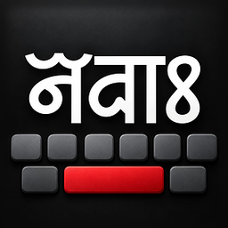

Nepal Lipi KeyboardCallijatra Foundation · Effective 29 September 2026
Nepal Lipi Keyboard does not collect, transmit or share any personal data.
The app has no internet permission. It is unable to send anything anywhere — by design, not by promise. There is no analytics, no crash reporting service, no advertising and no third-party SDK of any kind.
Everything the keyboard learns stays on your device.
A keyboard necessarily handles what you type. All of it stays local.
| What | Why | Where |
|---|---|---|
| Words you type and corrections you make | To improve suggestions for you | Your device’s app storage |
| Your personal dictionary | Words you add yourself | Android’s user dictionary |
| Clipboard history, if you enable it | To let you paste earlier items | Your device’s app storage |
| Settings, themes and layouts | To remember how you set the keyboard up | Your device’s app storage |
None of this is transmitted. None of it is readable by us.
You can erase it at any time: Settings → Advanced → Backup and restore, by clearing the app’s data in Android settings, or by uninstalling. Removing the app removes everything it stored.
When the keyboard crashes it writes a crash report to its own storage on your device so the fault can be diagnosed. A report contains the error and a stack trace from the app, not what you were typing.
Nothing is sent. There is no crash reporting service in the app. The report stays on your device unless you choose to export it yourself, which the app offers as a file you save or send using your own apps. Clearing the app’s data deletes any stored reports.
READ_CONTACTS) — optional. If you grant it,
names from your contacts are used to suggest and correctly spell those names as you type.
They are read on your device only, are never sent anywhere, and are not added to any
dictionary that leaves the app. Deny it and the keyboard works normally without name
suggestions.READ_USER_DICTIONARY,
WRITE_USER_DICTIONARY) — to read and add words in Android’s shared
personal dictionary, the same one other keyboards use.VIBRATE) — key press feedback, if enabled.RECEIVE_BOOT_COMPLETED) — so the
keyboard is ready when your device restarts.The app does not request internet, location, camera, microphone, storage or phone permissions.
The keyboard does not learn from password fields, or from fields an app marks as not suggesting. Incognito mode, under Settings → Advanced, disables learning entirely for whenever you want it off.
Gesture typing is not included with the app. If you choose to add a library yourself, you obtain that file from a third party and load it manually. We do not supply, host or control it, and this policy does not cover code you add. Only load a library from a source you trust.
The app is a keyboard with no accounts, no content feed and no data collection. It is suitable for all ages and collects nothing from anyone, children included.
If this policy changes, the revised version will be published at this address with a new effective date. Because the app collects nothing, material changes are unlikely.
Questions about this policy or the app:
paoneking@gmail.com